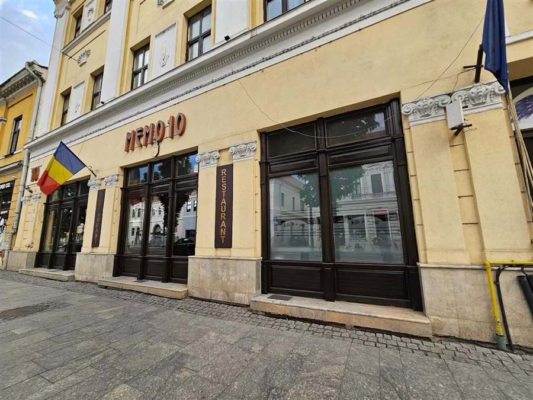
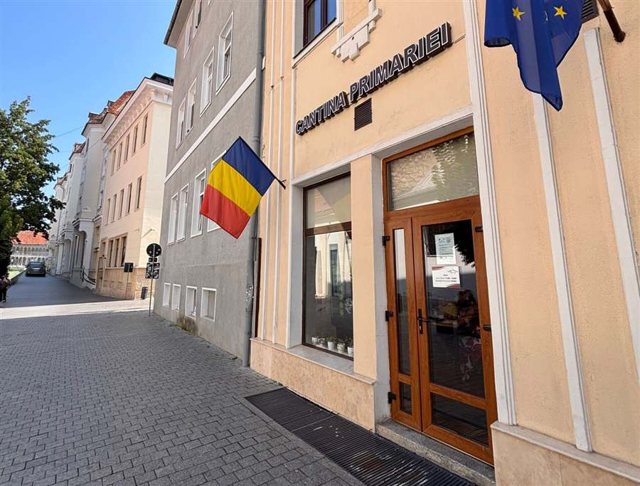
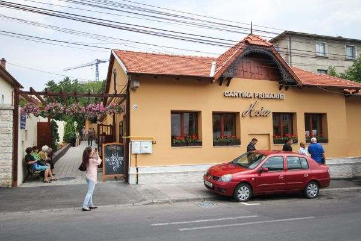
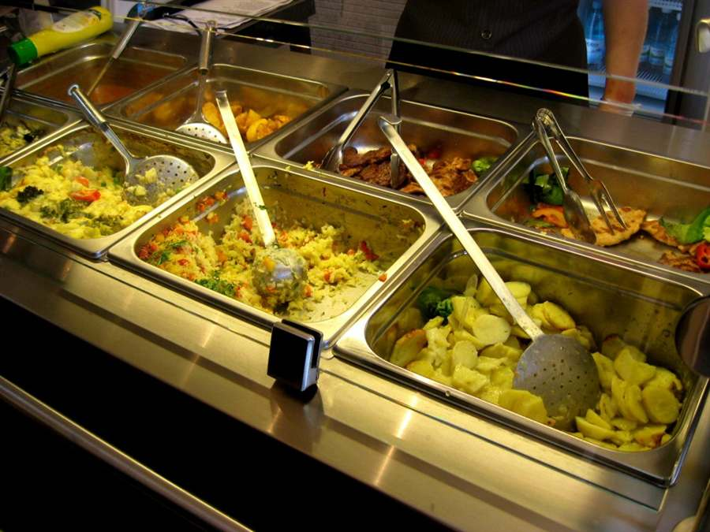

Acces păstrat
Analizarea variantelor legale prin care publicul să poată cumpăra în continuare mese accesibile, protejând serviciile sociale.
Scrie Primăriei, Consiliului Local, Consiliului Concurenței și conducerii cantinelor. Cerem păstrarea accesului publicului la toate cantinele municipale și clarificări pentru fiecare locație, inclusiv Memo 10, Emile Zola și Hoia.
Trimite email oficialilor ↗Citești. Personalizezi. Trimiți din emailul tău.
Poți semna și petiția existentă ↓



Alege instituția. Citește mesajul și adaugă ce contează pentru tine. Tu confirmi trimiterea în aplicația ta de email.
Pagina nu salvează numele sau mesajul pe un server și nu numără emailuri trimise. Când deschizi Gmail ori aplicația de email, textul este transferat serviciului ales.
Analizarea variantelor legale prin care publicul să poată cumpăra în continuare mese accesibile, protejând serviciile sociale.
Publicarea actelor, a motivelor concrete și a calendarului oricăror modificări, cu anonimizările necesare.
Discuții cu utilizatorii cantinelor și prezentarea impactului și alternativelor înaintea restrângerii accesului.
Cere reevaluarea restrângerii accesului, transparență și găsirea unei formule legale prin care Memo 10 să deservească în continuare comunitatea. Adresată Primăriei, primarului Emil Boc și Consiliului Local Cluj-Napoca.
Citește și semnează petiția ↗Cu cât scriu mai mulți oameni, cu atât e mai greu ca întrebările să rămână fără răspuns.